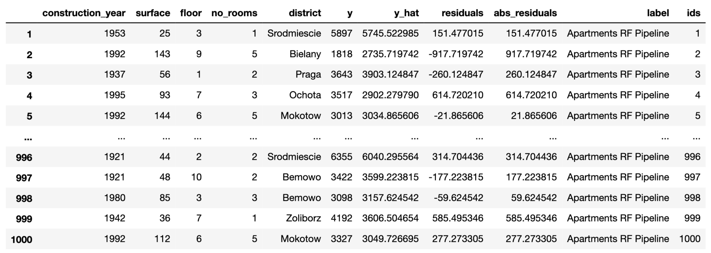

19 Residual-diagnostics Plots
19.1 Introduction
In this chapter, we present methods that are useful for a detailed examination of both overall and instance-specific model performance. In particular, we focus on graphical methods that use residuals. The methods may be used for several purposes:
In Part II of the book, we discussed tools for single-instance exploration. Residuals can be used to identify potentially problematic instances. The single-instance explainers can then be used in the problematic cases to understand, for instance, which factors contribute most to the errors in prediction.
For most models, residuals should express a random behavior with certain properties (like, e.g., being concentrated around 0). If we find any systematic deviations from the expected behavior, they may signal an issue with a model (for instance, an omitted explanatory variable or a wrong functional form of a variable included in the model).
In Chapter 15, we discussed measures that can be used to evaluate the overall performance of a predictive model. Sometimes, however, we may be more interested in cases with the largest prediction errors, which can be identified with the help of residuals.
Residual diagnostics is a classical topic related to statistical modelling. It is most often discussed in the context of the evaluation of goodness-of-fit of a model. That is, residuals are computed using the training data and used to assess whether the model predictions “fit” the observed values of the dependent variable. The literature on the topic is vast, as essentially every book on statistical modeling includes some discussion about residuals. Thus, in this chapter, we are not aiming at being exhaustive. Rather, our goal is to present selected concepts that underlie the use of residuals for predictive models.
19.2 Intuition
As it was mentioned in Section 2.3, we primarily focus on models describing the expected value of the dependent variable as a function of explanatory variables. In such a case, for a “perfect” predictive model, the predicted value of the dependent variable should be exactly equal to the actual value of the variable for every observation. Perfect prediction is rarely, if ever, expected. In practice, we want the predictions to be reasonably close to the actual values. This suggests that we can use the difference between the predicted and the actual value of the dependent variable to quantify the quality of predictions obtained from a model. The difference is called a residual.
For a single observation, residual will almost always be different from zero. While a large (absolute) value of a residual may indicate a problem with a prediction for a particular observation, it does not mean that the quality of predictions obtained from a model is unsatisfactory in general. To evaluate the quality, we should investigate the “behavior” of residuals for a group of observations. In other words, we should look at the distribution of the values of residuals.
For a “good” model, residuals should deviate from zero randomly, i.e., not systematically. Thus, their distribution should be symmetric around zero, implying that their mean (or median) value should be zero. Also, residuals should be close to zero themselves, i.e., they should show low variability.
Usually, to verify these properties, graphical methods are used. For instance, a histogram can be used to check the symmetry and location of the distribution of residuals. Note that a model may imply a concrete distribution for residuals. In such a case, the distributional assumption can be verified by using a suitable graphical method like, for instance, a quantile-quantile plot. If the assumption is found to be violated, one might want to be careful when using predictions obtained from the model.
19.3 Method
As it was already mentioned in Chapter 2, for a continuous dependent variable \(Y\), residual \(r_i\) for the \(i\)-th observation in a dataset is the difference between the observed value of \(Y\) and the corresponding model prediction:
\[\begin{equation} r_i = y_i - f(\underline{x}_i) = y_i - \widehat{y}_i. \tag{19.1} \end{equation}\]
Standardized residuals are defined as
\[\begin{equation} \tilde{r}_i = \frac{r_i}{\sqrt{\mbox{Var}(r_i)}}, \tag{19.2} \end{equation}\]
where \(\mbox{Var}(r_i)\) is the variance of the residual \(r_i\).
Of course, in practice, the variance of \(r_i\) is usually unknown. Hence, the estimated value of \(\mbox{Var}(r_i)\) is used in (19.2). Residuals defined in this way are often called the Pearson residuals (Galecki and Burzykowski 2013). Their distribution should be approximately standard-normal. For the classical linear-regression model, \(\mbox{Var}(r_i)\) can be estimated by using the design matrix. On the other hand, for count data, the variance can be estimated by \(f(\underline{x}_i)\), i.e., the expected value of the count. In general, for complicated models, it may be hard to estimate \(\mbox{Var}(r_i)\), so it is often approximated by a constant for all residuals.
Definition (19.2) can also be applied to a binary dependent variable if the model prediction \(f(\underline{x}_i)\) is the probability of observing \(y_i\) and upon coding the two possible values of the variable as 0 and 1. However, in this case, the range of possible values of \(r_i\) is restricted to \([-1,1]\), which limits the usefulness of the residuals. For this reason, more often the Pearson residuals are used. Note that, if the observed values of the explanatory-variable vectors \(\underline{x}_i\) lead to different predictions \(f(\underline{x}_i)\) for different observations in a dataset, the distribution of the Pearson residuals will not be approximated by the standard-normal one. This is the case when, for instance, one (or more) of the explanatory variables is continuous. Nevertheless, in that case, the index plot may still be useful to detect observations with large residuals. The standard-normal approximation is more likely to apply in the situation when the observed values of vectors \(\underline{x}_i\) split the data into a few, say \(K\), groups, with observations in group \(k\) (\(k=1,\ldots,K\)) sharing the same predicted value \(f_k\). This may be happen if all explanatory variables are categorical with a limited number of categories. In that case, one can consider averaging residuals \(r_i\) per group and standardizing them by \(\sqrt{f_k(1-f_k)/n_k}\), where \(n_k\) is the number of observations in group \(k\).
For categorical data, residuals are usually defined in terms of differences in predictions for the dummy binary variable indicating the category observed for the \(i\)-th observation.
Let us consider the classical linear-regression model. In that case, residuals should be normally distributed with mean zero and variance defined by the diagonal of hat-matrix \(\underline X(\underline X^T \underline X)^{-1}\underline X^T\). For independent explanatory variables, it should lead to a constant variance of residuals. Figure 19.1 presents examples of classical diagnostic plots for linear-regression models that can be used to check whether the assumptions are fulfilled. In fact, the plots in Figure 19.1 suggest issues with the assumptions.
In particular, the top-left panel presents the residuals in function of the estimated linear combination of explanatory variables, i.e., predicted (fitted) values. For a well-fitting model, the plot should show points scattered symmetrically around the horizontal straight line at 0. However, the scatter in the top-left panel of Figure 19.1 has got a shape of a funnel, reflecting increasing variability of residuals for increasing fitted values. This indicates a violation of the homoscedasticity, i.e., the constancy of variance, assumption. Also, the smoothed line suggests that the mean of residuals becomes increasingly positive for increasing fitted values. This indicates a violation of the assumption that residuals have got zero-mean.
The top-right panel of Figure 19.1 presents the scale-location plot, i.e., the plot of \(\sqrt{\tilde{r}_i}\) in function of the fitted values \(f(\underline{x}_i)\). For a well-fitting model, the plot should show points scattered symmetrically across the horizontal axis. This is clearly not the case of the plot in Figure 19.1, which indicates a violation of the homoscedasticity assumption.
The bottom-left panel of Figure 19.1 presents the plot of standardized residuals in the function of leverage. Leverage is a measure of the distance between \(\underline{x}_i\) and the vector of mean values for all explanatory variables (Kutner et al. 2005). A large leverage value for the \(i\)-th observation, say \(l_i\), indicates that \(\underline{x}_i\) is distant from the center of all observed values of the vector of explanatory variables. Importantly, a large leverage value implies that the observation may have an important influence on predicted/fitted values. In fact, for the classical linear-regression model, it can be shown that the predicted sum-of-squares, defined in (15.5), can be written as
\[\begin{equation} PRESS = \sum_{i=1}^{n} (\widehat{y}_{i(-i)} - y_i)^2 = \sum_{i=1}^{n} \frac{r_i^2}{(1-l_{i})^2}. \tag{19.3} \end{equation}\]
Thus, (19.3) indicates that observations with a large \(r_i\) (or \(\tilde{r}_i\)) and a large \(l_i\) have an important influence on the overall predictive performance of the model. Hence, the plot of standardized residuals in the function of leverage can be used to detect such influential observations. Note that the plot can also be used to check homoscedasticity because, under that assumption, it should show a symmetric scatter of points around the horizontal line at 0. This is not the case of the plot presented in the bottom-left panel of Figure 19.1. Hence, the plot suggests that the assumption is not fulfilled. However, it does not indicate any particular influential observations, which should be located in the upper-right or lower-right corners of the plot.
Note that the plot of standardized residuals in function of leverage can also be used to detect observations with large differences between the predicted and observed value of the dependent variable. In particular, given that \({\tilde{r}_i}\) should have approximately standard-normal distribution, only about 0.5% of them should be larger, in absolute value, than 2.57. If there is an excess of such observations, this could be taken as a signal of issues with the fit of the model. At least two such observations (59 and 143) are indicated in the plot shown in the bottom-left panel of Figure 19.1.
Finally, the bottom-right panel of Figure 19.1 presents an example of a normal quantile-quantile plot. In particular, the vertical axis represents the ordered values of the standardized residuals, whereas the horizontal axis represents the corresponding values expected from the standard normal distribution. If the normality assumption is fulfilled, the plot should show a scatter of points close to the \(45^{\circ}\) diagonal. Clearly, this is not the case of the plot in the bottom-right panel of Figure 19.1.

Figure 19.1: Diagnostic plots for a linear-regression model. Clockwise from the top-left: residuals in function of fitted values, a scale-location plot, a normal quantile-quantile plot, and a leverage plot. In each panel, indexes of the three most extreme observations are indicated.
19.4 Example: apartment-prices data
In this section, we consider the linear-regression model apartments_lm (Section 4.5.1) and the random forest model apartments_rf (Section 4.5.2) for the apartment-prices dataset (Section 4.4). Recall that the dependent variable of interest, the price per square meter, is continuous. Thus, we can use residuals \(r_i\), as defined in (19.1). We compute the residuals for the apartments_test testing dataset (see Section 4.5.4). It is worth noting that, as it was mentioned in Section 15.4.1, RMSE for both models is very similar for that dataset. Thus, overall, the two models could be seen as performing similarly on average.
Figures 19.2 and 19.3 summarize the distribution of residuals for both models. In particular, Figure 19.2 presents histograms of residuals, while Figure 19.3 shows box-and-whisker plots for the absolute value of the residuals.

Figure 19.2: Histogram of residuals for the linear-regression model apartments_lm and the random forest model apartments_rf for the apartments_test dataset.
Despite the similar value of RMSE, the distributions of residuals for both models are different. In particular, Figure 19.2 indicates that the distribution for the linear-regression model is, in fact, split into two separate, normal-like parts, which may suggest omission of a binary explanatory variable in the model. The two components are located around the values of about -200 and 400. As mentioned in the previous chapters, the reason for this behavior of the residuals is the fact that the model does not capture the non-linear relationship between the price and the year of construction. For instance, Figure 17.8 indicates that the relationship between the construction year and the price may be U-shaped. In particular, apartments built between 1940 and 1990 appear to be, on average, cheaper than those built earlier or later.
As seen from Figure 19.2, the distribution of residuals for the random forest model is skewed to the right and multimodal. It seems to be centered at a value closer to zero than the distribution for the linear-regression model, but it shows a larger variation. These conclusions are confirmed by the box-and-whisker plots in Figure 19.3.

Figure 19.3: Box-and-whisker plots of the absolute values of the residuals of the linear-regression model apartments_lm and the random forest model apartments_rf for the apartments_test dataset. The dots indicate the mean value that corresponds to root-mean-squared-error.
The plots in Figures 19.2 and 19.3 suggest that the residuals for the random forest model are more frequently smaller than the residuals for the linear-regression model. However, a small fraction of the random forest-model residuals is very large and it is due to them that the RMSE is comparable for the two models.
In the remainder of the section, we focus on the random forest model.
Figure 19.4 shows a scatter plot of residuals (vertical axis) in function of the observed (horizontal axis) values of the dependent variable. For a “perfect” predictive model, we would expect the horizontal line at zero. For a “good” model, we would like to see a symmetric scatter of points around the horizontal line at zero, indicating random deviations of predictions from the observed values. The plot in Figure 19.4 shows that, for the large observed values of the dependent variable, the residuals are positive, while for small values they are negative. This trend is clearly captured by the smoothed curve included in the graph. Thus, the plot suggests that the predictions are shifted (biased) towards the average.

Figure 19.4: Residuals and observed values of the dependent variable for the random forest model apartments_rf for the apartments_test dataset.
The shift towards the average can also be seen from Figure 19.5 that shows a scatter plot of the predicted (vertical axis) and observed (horizontal axis) values of the dependent variable. For a “perfectly” fitting model we would expect a diagonal line (indicated in red). The plot shows that, for large observed values of the dependent variable, the predictions are smaller than the observed values, with an opposite trend for the small observed values of the dependent variable.

Figure 19.5: Predicted and observed values of the dependent variable for the random forest model apartments_rf for the apartments_test dataset. The red line indicates the diagonal.
Figure 19.6 shows an index plot of residuals, i.e., their scatter plot in function of an (arbitrary) identifier of the observation (horizontal axis). The plot indicates an asymmetric distribution of residuals around zero, as there is an excess of large positive (larger than 500) residuals without a corresponding fraction of negative values. This can be linked to the right-skewed distribution seen in Figures 19.2 and 19.3 for the random forest model.

Figure 19.6: Index plot of residuals for the random forest model apartments_rf for the apartments_test dataset.
Figure 19.7 shows a scatter plot of residuals (vertical axis) in function of the predicted (horizontal axis) value of the dependent variable. For a “good” model, we would like to see a symmetric scatter of points around the horizontal line at zero. The plot in Figure 19.7, as the one in Figure 19.4, suggests that the predictions are shifted (biased) towards the average.

Figure 19.7: Residuals and predicted values of the dependent variable for the random forest model apartments_rf for the apartments_test dataset.
The random forest model, as the linear-regression model, assumes that residuals should be homoscedastic, i.e., that they should have a constant variance. Figure 19.8 presents a variant of the scale-location plot of residuals, i.e., a scatter plot of the absolute value of residuals (vertical axis) in function of the predicted values of the dependent variable (horizontal axis). The plot includes a smoothed line capturing the average trend. For homoscedastic residuals, we would expect a symmetric scatter around a horizontal line; the smoothed trend should be also horizontal. The plot in Figure 19.8 deviates from the expected pattern and indicates that the variability of the residuals depends on the (predicted) value of the dependent variable.
For models like linear regression, such heteroscedasticity of the residuals would be worrying. In random forest models, however, it may be less of concern. This is beacuse it may occur due to the fact that the models reduce variability of residuals by introducing a bias (towards the average). Thus, it is up to the developer of a model to decide whether such a bias (in our example, for the cheapest and most expensive apartments) is a desirable price to pay for the reduced residual variability.

Figure 19.8: The scale-location plot of residuals for the random forest model apartments_rf for the apartments_test dataset.
19.5 Pros and cons
Diagnostic methods based on residuals are a very useful tool in model exploration. They allow identifying different types of issues with model fit or prediction, such as problems with distributional assumptions or with the assumed structure of the model (in terms of the selection of the explanatory variables and their form). The methods can help in detecting groups of observations for which a model’s predictions are biased and, hence, require inspection.
A potential complication related to the use of residual diagnostics is that they rely on graphical displays. Hence, for a proper evaluation of a model, one may have to construct and review many graphs. Moreover, interpretation of the patterns seen in graphs may not be straightforward. Also, it may not be immediately obvious which element of the model may have to be changed to remove the potential issue with the model fit or predictions.
19.6 Code snippets for R
In this section, we present diagnostic plots as implemented in the DALEX package for R. The package covers all plots and methods presented in this chapter. Similar functions can be found in packages auditor (Gosiewska and Biecek 2018), rms (Harrell Jr 2018), and stats (Faraway 2002).
For illustration purposes, we will show how to create the plots shown in Section 19.4 for the linear-regression model apartments_lm (Section 4.5.1) and the random forest model apartments_rf (Section 4.5.2) for the apartments_test dataset (Section 4.4).
We first load the two models via the archivist hooks, as listed in Section 4.5.6. Subsequently, we construct the corresponding explainers by using function explain() from the DALEX package (see Section 4.2.6). Note that we use the apartments_test data frame without the first column, i.e., the m2.price variable, in the data argument. This will be the dataset to which the model will be applied. The m2.price variable is explicitly specified as the dependent variable in the y argument. We also load the randomForest package, as it is important to have the corresponding predict() function available for the random forest model.
library("DALEX")
model_apart_lm <- archivist:: aread("pbiecek/models/55f19")
explain_apart_lm <- DALEX::explain(model = model_apart_lm,
data = apartments_test[,-1],
y = apartments_test$m2.price,
label = "Linear Regression")
library("randomForest")
model_apart_rf <- archivist:: aread("pbiecek/models/fe7a5")
explain_apart_rf <- DALEX::explain(model = model_apart_rf,
data = apartments_test[,-1],
y = apartments_test$m2.price,
label = "Random Forest")For exploration of residuals, DALEX includes two useful functions. The model_performance() function can be used to evaluate the distribution of the residuals. On the other hand, the model_diagnostics() function is suitable for investigating the relationship between residuals and other variables.
The model_performance() function was already introduced in Section 15.6. Application of the function to an explainer-object returns an object of class “model_performance” which includes, in addition to selected model-performance measures, a data frame containing the observed and predicted values of the dependent variable together with the residuals.
mr_lm <- DALEX::model_performance(explain_apart_lm)
mr_rf <- DALEX::model_performance(explain_apart_rf)By applying the plot() function to a “model_performance”-class object we can obtain various plots. The required type of the plot is specified with the help of the geom argument (see Section 15.6). In particular, specifying geom = "histogram" results in a histogram of residuals. In the code below, we apply the plot() function to the “model_performance”-class objects for the linear-regression and random forest models. As a result, we automatically get a single graph with the histograms of residuals for the two models. The resulting graph is shown in Figure 19.2
The box-and-whisker plots of the residuals for the two models can be constructed by applying the geom = "boxplot" argument. The resulting graph is shown in Figure 19.3,
Function model_diagnostics() can be applied to an explainer-object to directly compute residuals. The resulting object of class “model_diagnostics” is a data frame in which the residuals and their absolute values are combined with the observed and predicted values of the dependent variable and the observed values of the explanatory variables. The data frame can be used to create various plots illustrating the relationship between residuals and the other variables.
Application of the plot() function to a model_diagnostics-class object produces, by default, a scatter plot of residuals (on the vertical axis) in function of the predicted values of the dependent variable (on the horizontal axis). By using arguments variable and yvariable, it is possible to specify plots with other variables used for the horizontal and vertical axes, respectively. The two arguments accept, apart from the names of the explanatory variables, the following values:
"y"for the dependent variable,"y_hat"for the predicted value of the dependent variable,"obs"for the identifiers of observations,"residuals"for residuals,"abs_residuals"for absolute values of residuals.
Thus, to obtain the plot of residuals in function of the observed values of the dependent variable, as shown in Figure 19.4, the syntax presented below can be used.
To produce Figure 19.5, we have got to use the predicted values of the dependent variable on the vertical axis. This is achieved by specifying the yvariable = "y_hat" argument. We add the diagonal reference line to the plot by using the geom_abline() function.
plot(md_rf, variable = "y", yvariable = "y_hat") +
geom_abline(colour = "red", intercept = 0, slope = 1)Figure 19.6 presents an index plot of residuals, i.e., residuals (on the vertical axis) in function of identifiers of individual observations (on the horizontal axis). Toward this aim, we use the plot() function call as below.
Finally, Figure 19.8 presents a variant of the scale-location plot, with absolute values of the residuals shown on the vertical scale and the predicted values of the dependent variable on the horizontal scale. The plot is obtained with the syntax shown below.
Note that, by default, all plots produced by applying the plot() function to a “model_diagnostics”-class object include a smoothed curve. To exclude the curve from a plot, one can use the argument smooth = FALSE.
19.7 Code snippets for Python
In this section, we use the dalex library for Python. The package covers all methods presented in this chapter. But, as mentioned in Section 19.1, residuals are a classical model-diagnostics tool. Thus, essentially any model-related library includes functions that allow calculation and plotting of residuals.
For illustration purposes, we use the apartments_rf random forest model for the Titanic data developed in Section 4.6.2. Recall that the model is developed to predict the price per square meter of an apartment in Warsaw.
In the first step we create an explainer-object that will provide a uniform interface for the predictive model. We use the Explainer() constructor for this purpose.
import dalex as dx
apartments_rf_exp = dx.Explainer(apartments_rf, X, y,
label = "Apartments RF Pipeline")The function that calculates residuals, absolute residuals and observation ids is model_diagnostics().

The results can be visualised by applying the plot() method. Figure 19.9 presents the created plot.
Figure 19.9: Residuals versus predicted values for the random forest model for the Apartments data.
In the plot() function we can specify what shall be presented on horizontal and vertical axes. Possible values are columns in the md_rf.result data frame, i.e. residuals, abs_residuals, y, y_hat, ids and variable names.

Figure 19.10: Absolute residuals versus indices of corresponding observations for the random forest model for the Apartments data.
References
Faraway, Julian. 2002. Practical Regression and Anova Using R. https://cran.r-project.org/doc/contrib/Faraway-PRA.pdf.
Galecki, A., and T. Burzykowski. 2013. Linear Mixed-Effects Models Using R: A Step-by-Step Approach. Springer Publishing Company, Incorporated.
Gosiewska, Alicja, and Przemyslaw Biecek. 2018. auditor: Model Audit - Verification, Validation, and Error Analysis. https://CRAN.R-project.org/package=auditor.
Harrell Jr, Frank E. 2018. Rms: Regression Modeling Strategies. https://CRAN.R-project.org/package=rms.
Kutner, M. H., C. J. Nachtsheim, J. Neter, and W. Li. 2005. Applied Linear Statistical Models. New York: McGraw-Hill/Irwin.